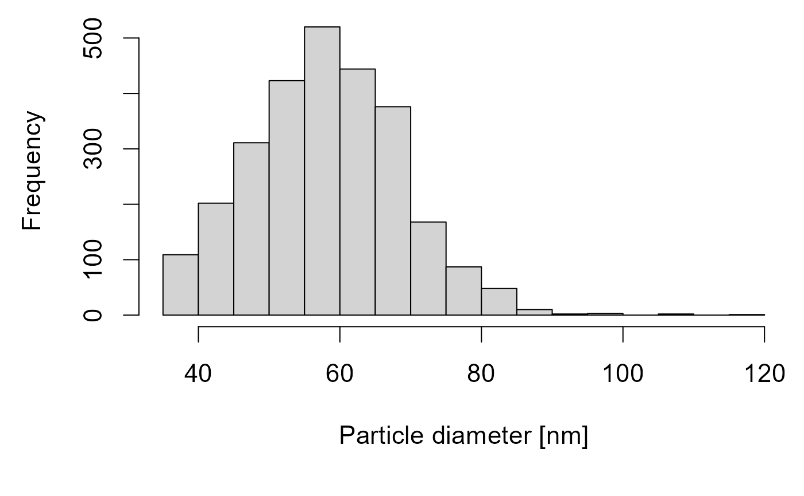

Plots a histogram of the particle size distribution of a single particle-ICP-MS measurement.
Usage
plot_particle_diameter(
x,
cali_slope = 1488,
V_fl = 0.0075,
part_mat = c("Au", "Ag"),
dia_part = 60,
LFD = 20000
)Details
Check the particle size distribution for the quality of the nano particle standard and single particle-ICP-MS measuremet. Densities for gold or silver nano particle standards are deposited.
Examples
sp_data <- ETVapp::ETVapp_testdata[["oIDMS"]][["sp_particle"]][[1]]
head(plot_particle_diameter(x = sp_data))

#> Time 197Au Particle Mass Diameter
#> 9 0.030 98274.48 94592.30 3.0237918 66.88550
#> 29 0.090 87216.25 83534.07 2.6702981 64.17038
#> 30 0.093 26353.11 22670.93 0.7247120 41.54670
#> 47 0.144 49402.79 45720.61 1.4615314 52.49091
#> 54 0.165 28022.36 24340.18 0.7780722 42.54233
#> 63 0.192 68801.31 65119.13 2.0816355 59.05857